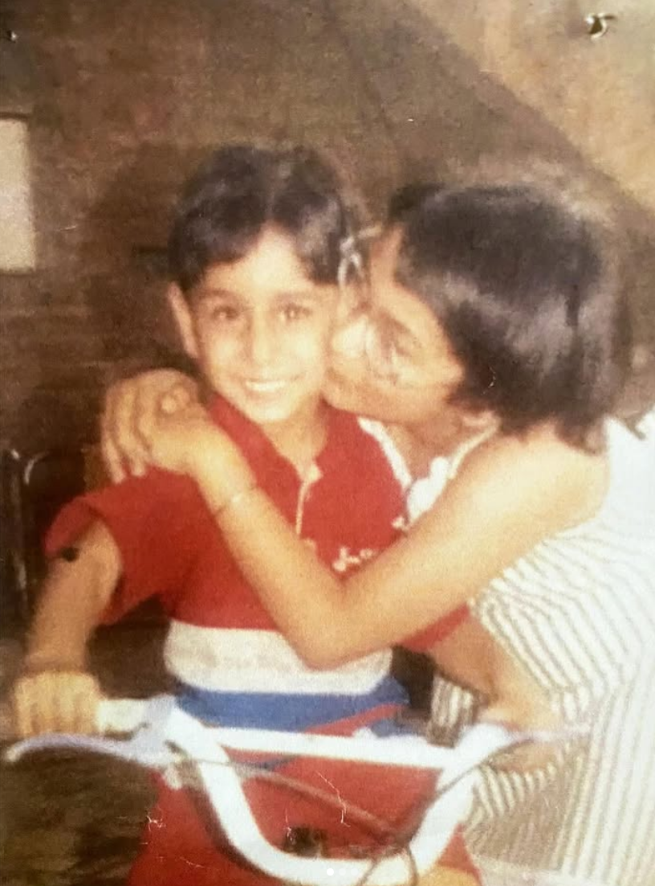

Darpan Beri
Unlocking Data's Potential, Developing Robust AI Solutions, and Driving Measurable Results: Applying Quantitative Methods to Complex Challenges.
Unlocking Data's Potential, Developing Robust AI Solutions, and Driving Measurable Results: Applying Quantitative Methods to Complex Challenges.
I’m Darpan Beri. A new grad who just graduated with an M.Sc. in Big Data Analytics (4.0 GPA) and eager to launch my career. I’m passionate about using software and data to solve complex problems and bring hands‑on experience in data engineering, machine learning, and software development.
A newly minted Master’s grad driven by curiosity and impact. During my capstone, I ran 918 RAG experiments to fine‑tune LLaMa pipelines; at Gemini Soft Solutions I cut daily pipeline errors by 90% and at SANDAG I accelerated data releases by 100×. Now I’m looking to apply those skills, whether building scalable ETL systems, crafting ML models, or architecting full‑stack applications to real‑world challenges.
| Data Engineering | Machine Learning | Software Development | DevOps & Infra |
|---|---|---|---|
| • Python & SQL | • PyTorch & Scikit‑Learn | • React & JavaScript | • Docker & Kubernetes |
| • AWS S3 & kdb+ | • RAG & Transformers | • Java & C++ | • Git & CI/CD |
| • ETL Pipelines & Airflow | • Model Evaluation (R²) | • REST APIs & Flask | • Grafana |
A selection of my projects and academic achievements.
For my M.Sc. capstone at Trent University, I explored how hyperparameters (chunk_size, top_k) affect a LLaMa‑based Retrieval‑Augmented Generation (RAG) pipeline, and whether using an LLM to automatically evaluate its outputs can be trusted.
AI legal assistant using RAG + LLaMa‑3.2 to retrieve/cite clauses from the Canadian Environmental Protection Act (fallback: DuckDuckGo)
Google Collab →OpenCV‑powered OCR that handles 3D rotations via affine/perspective transforms.
GitHub →I'm currently based in Ontario. Feel free to reach out to me for any opportunities or collaborations.